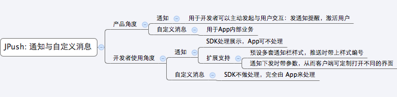
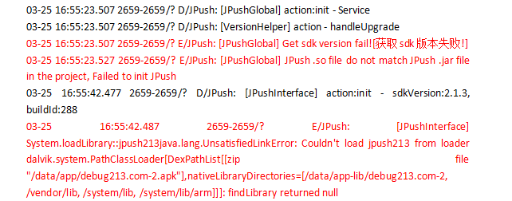
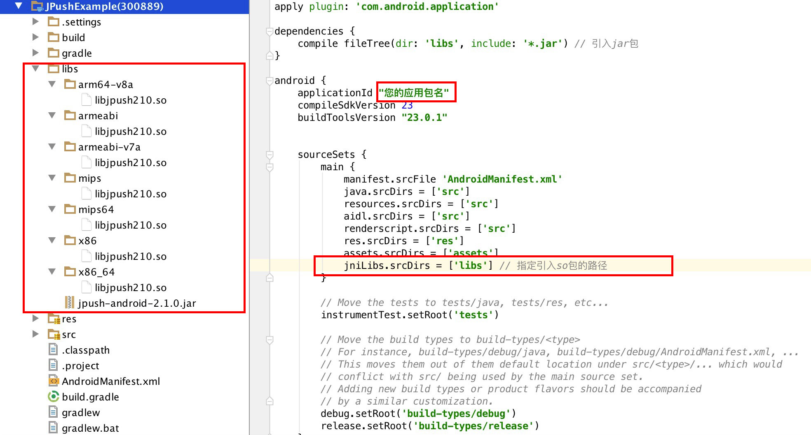
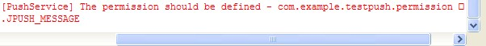
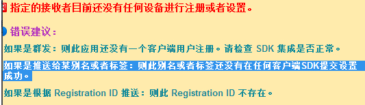
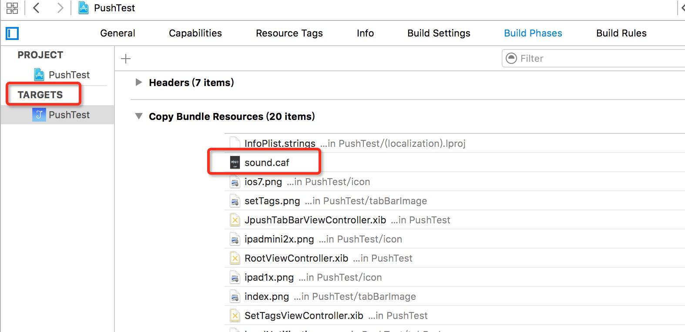

常见问题
从这里开始
JPush有什么优势？
- 全面的 Push 能力，随时到达你的用户
- 客户端 SDK 资源占用少，流量占用少
- 经过考验的大规模用户 Push 平台
- 简单易用的 Portal，可以用来发送通知，统计分析推送效果
JPush支持哪些平台？
当前支持：Android, iOS, Winphone 三大手机平台。暂不支持 Web。
JPush如何收费？
基础服务免费。
高级服务收取一定的费用。
详情请参考：https://www.jpush.cn/price/
JPush的赢利模式是怎么样的？
学习流行的 Evernote, Dropbox 的云服务模式，对高级服务收费，为大多数用户提供免费的基础服务。
使用JPush从哪里开始？
SDK 与 服务器端通过什么互相识别？
AppKey
会不会限制推送消息的数量？
没有限制！
Portal上不会限制推送消息的数量。
通过API 推送也不会限制消息数量。
推送的用户数量没有限制，每天推送的消息条数也没有限制。
服务器容量如何？并发有多大？
极光推送的系统目前已经支持 10 亿级用户并发访问。
整体架构设计上，任何单点失败不会影响整体系统运行。并且可在线升级。
极光推送做了多久了？是否稳定可靠？
我们从 2012 年的 2 月份开始发布极光推送产品，是国内最早的第三方推送服务。
极光推送后台使用什么技术实现的？是 XMPP 协议么？
后台主要使用纯 C 语言实现。
使用自定义的二进制协议，以尽可能节约流量。
怎么样保证推送消息的安全？
我们建议开发者不要推送保密的信息，就像QQ建议你不要在聊天时发送保密的信息一样。
如果开发者的确有保密的信息，需要送达到用户，则可以考虑这样做：
先通过 JPush 推送一条消息，这条消息触发客户端App去与开发者服务器交互保密信息。
在免费推送内容上，会加上“极光推送”等字样吗？
不会，所有推送的内容，都是开发者自己定义的，不会添加任何内容。
极光推送耗电、耗流量如何？
以下说到的，不考虑推送的内容部分。推送内容的多少是由开发者决定的。
另外，实测电量、流量消耗，与网络状况相关比较大。
所以这里的数据是理论平均值：流量消耗 20K/天，电量消耗 30mAh/天。
为什么在 Portal 上或者调用 API 推送消息时提示：找不到目标用户？
其含义是：当向客户端推送消息时，发现对于指定的推送方式，找不到该方式下的目标用户。
-
如果推送方式是群发，则表示：该应用还没有一个客户端成功地集成了 JPush SDK 并连接到 JPush 服务器。如果您确实做了客户端App集成 JPush SDK的工作，请检查客户端日志，看是不是注册失败。
-
如果推送方式是别名或者标签，则表示：该别名或者标签，在客户端还未被成功地调用 setAliasAndTags 设置成功。请参考：别名与标签使用教程。
-
对于 Android 还可以使用 IMEI 来推送。由于有很多 Android 设备取不到 IMEI，所以我们建议根据 IMEI 推送仅用于测试目的。
通知与自定义消息有什么区别？
下图是个简单的区分。详情请参考文档：通知 vs. 自定义消息。

可以推送多媒体文件到客户端么？
推送消息本身是限定长度的文本。
不直接支持文件的推送，但可以通过推送 url 来实现。
即先推送文件下载 url，到客户端触发逻辑来通过 url 下载文件。
怎么样向特定的某个用户推送消息？
在客户端使用 setAliasAndTags API 来为该用户指定别名。以便服务器端对该别名推送消息。
进一步了解请参考文档：标签与别名API。
怎么样向指定的一群用户推送消息？
在客户端使用 setAliasAndTags API 来为该用户设置标签。这样服务器可以向所有具有该标签的用户群发消息。
进一步了解请参考文档：标签与别名API。
Android 常见问题
为什么应用程序无法收到 Push 消息（Android）？
- 确认 appKey（在Portal上生成的）已经正确的写入 Androidmanifest.xml
- 确认测试手机（或者模拟器）已成功连入网络
- 确认有客户端 "Login succeed" 日志
详情请参考教程：Android SDK 调试指南
Java.lang.UnsatisfiedLinkError

此错误是由于没有正确的加载libjpush.so文件，请检查libjpush.so是否在正确的位置(libs–>armeabi–>libjpush.so)
JPush SDK 迁移到 Android Studio 需要添加.SO文件打包到APK的lib文件夹中,可以编辑 build.gradle 脚本，自定义 *.so 目录，参考Demo：

The permission should be defined

此错误是没有正确的定义permision，请添加权限：
<permission android:name="您应用的包名.permission.JPUSH_MESSAGE" android:protectionLevel="signature" />
<uses-permission android:name="您应用的包名.permission.JPUSH_MESSAGE" />
如何在代码时混淆忽略 jpush-sdk-release.jar？
-
请下载4.x及以上版本的proguard.jar， 并替换你Android Sdk "tools\proguard\lib\proguard.jar"
-
开发工具使用Eclipse或者Android Studio,请在工程的project.properties中配置好proguard-android.txt，并且在proguard-android.txt配置：
-dontoptimize -dontpreverify -dontwarn cn.jpush.** -keep class cn.jpush.** { *; } -
请使用 SDK1.3.X 及以后的版本
-
v2.0.5 及以上的版本由于引入了protobuf ，在上面基础之上增加排出混淆的配置。
#==================gson========================== -dontwarn com.google.** -keep class com.google.gson.** {*;} #==================protobuf====================== -dontwarn com.google.** -keep class com.google.protobuf.** {*;}
推送成功了，为什么有部分客户端收不到推送？
请检查收不到通知的手机：
- 请在logcat查看日志，确定客户端的jpush是否集成成功，网络是否有问题
- 请看日志或使用接口 isPushStopped来检查是否调用了stoppush
- 检查手机的JPush高级设置中是否设置了“允许推送时间”
- 手机的应用中是否勾选了“显示通知”
第三方系统收不到推送的消息
由于第三方 ROM 的管理软件需要用户手动操作
-
小米【MIUI】
- 自启动管理：需要把应用加到【自启动管理】列表，否则杀进程或重新开机后进程无法开启
- 通知栏设置：应用默认都是显示通知栏通知，如果关闭，则收到通知也不会提示
- 网络助手：可以手动禁止已安装的第三方程序访问2G/3G和WIFI的网络和设置以后新安装程序是否允许访问2G/3G和WIFI的网络
- MIUI 7 神隐模式： 允许应用进行自定义配置模式，应用在后台保持联网可用，否则应用进入后台时，应用无法正常接收消息。【设置】下电量和性能中【神隐模式】
-
华为【Emotion】
- 自启动管理：需要把应用加到【自启动管理】列表，否则杀进程或重新开机后进程不会开启，只能手动开启应用
- 后台应用保护：需要手动把应用加到此列表，否则设备进入睡眠后会自动杀掉应用进程，只有手动开启应用才能恢复运行
- 通知管理：应用状态有三种：提示、允许、禁止。禁止应用则通知栏不会有任何提醒
-
魅族【Flyme】
- 自启动管理：需要把应用加到【自启动管理】列表，否则杀进程或重新开机后进程无法开启
- 通知栏推送：关闭应用通知则收到消息不会有任何展示
- 省电管理： 安全中心里设置省电模式，在【待机耗电管理】中允许应用待机时，保持允许，否则手机休眠或者应用闲置一段时间，无法正常接收消息。
-
VIVO【Funtouch OS】
- 内存一键清理：需要将应用加入【白名单】列表，否则系统自带的“一键加速”，会杀掉进程
- 自启动管理：需要将应用加入“i管家”中的【自启动管理】列表，否则重启手机后进程不会自启。但强制手动杀进程，即使加了这个列表中，后续进程也无法自启动。
-
OPPO【ColorOS】
- 冻结应用管理：需要将应用加入纯净后台，否则锁屏状态下无法及时收到消息
- 自启动管理：将应用加入【自启动管理】列表的同时，还需要到设置-应用程序-正在运行里锁定应用进程，否则杀进程或者开机后进程不会开启，只能手动开启应用
Android 5.0 系统报错:INSTALL_FAILED_DUPLICATE_PERMISSION
与 5.0的多账户系统有关，其中一个账号安装一个应用，其他账号也会自动安装了这个应用；如果其中一个账号卸载了这个应用，那其他账号是不受影响的（其他账号仍有这个应用），所以如果在某个账号下卸载了应用，安装一个同包名但是签名不一致的包，就会安装失败了。
解决办法：在各个账户上的安装这个程序的应用卸载，然后重新安装即可解决这个问题。
AsyncTask就没办法执行到onPostExecute()方法
这是Android 旧系统带有的问题，解决办法如下：
在application里onCreate方法加上：
try {
Class.forName("android.os.AsyncTask");
} catch (ClassNotFoundException e) {
e.printStackTrace();
}
详情请看链接：https://code.google.com/p/android/issues/detail?id=20915
Tag、Alias、Registrationid需要每次初始化时都重新设置吗，会变化吗？
-
tag、alias可以参考别名与标签 API进行设置，每次设置是覆盖设置，而不是增量设置。Tag和alias一经设置成功，除非取消或覆盖，是不会变化的。设置好的tag、alias与客户端的对应关系保存在JPush服务器，目前没有从JPush服务器查询这个对应关系的接口，所以需要客户将对应关系保存在APP应用服务器。
-
Registrationid是客户端SDK第一次成功连接到Jpush服务器时，Jpush服务器给分配的。可以通过获取 RegistrationID API来获取Registrationid进行推送。Registrationid对应一个应用的一个客户端。
没有沙箱API怎么测试？
直接用 JPush 的 API 测试就行。
其他国家能否使用极光推送（局域网能否使用极光推送）？
只要能连网到Jpush服务器都可以。判断能否联网到Jpush服务器的方法：ping通 api.jpush.cn 8800
用设置的标签或别名推送，出现下面提示：

这可能有两种情况：
- SDK没有集成成功，客户端有 "Login succeed" 日志才表示SDK集成成功。
- 设置别名或标签失败，请调用带返回值的函数Method - setAliasAndTags (with Callback)来设置标签或别名，同时参考错误码定义来修改直到设置成功返回0.
可以打开 www.jpush.cn，但打不开docs，提示无法找到docs.jpush.cn
- 提示客户换个浏览器试试
- 如果还是不行，执行下面的命令反馈结果排查一下问题
- ping docs.jpush.cn
- nslookup docs.jpush.cn
- telnet docs.jpush.cn
- 提供一下自己机器访问外网其他网站是否正常
appkey是怎么对应的？
android 的包名和 appkey 需对应。
内网使用极光推送应该怎么设置？
内网使用极光推送需要服务器开放下列端口限制，用于JPush的登录注册及保持推送长链接：
- 19000
- 3000-3020
- 7000-7020
- 8000-8020
iOS 常见问题
iOS 9集成
iOS 9变动影响SDK部分:
- 增加了bitCode编码格式,当SDK不支持bitCode时，用户集成时无法开启bitCode选项.
- 现象:用户集成SDK后无法编译通过，错误日志里包含了bitCode的相关错误信息
- 默认使用https连接,如果请求为http,需要手动配置plist来支持http服务，当前我们的服务器请求都走http服务。
- 现象:用户集成SDK后，所有JPush相关的http服务都提示连接错误或者连接超时,可能是此问题。
bitCode解决方式
JPush iOS SDK v1.8.7 及以上版本的SDK,已经增加对 iOS 9 新特性 bitCode 的支持.JMessage iOS SDK v2.0.0 及以上版本支持bitCode。
Https解决方式
SDK未提供https地址版本时
- 需要用户主动在当前项目的Info.plist中添加NSAppTransportSecurity类型Dictionary。
- 在NSAppTransportSecurity下添加NSAllowsArbitraryLoads类型Boolean,值设为YES
iOS 如何推送自定义声音
客户端需要将声音文件导入工程里，选中工程Target -> Build Phrases -> Copy Bundle Resources 
服务端推送时，需要指定iOS 平台下的sound参数，具体传入的值是声音文件名＋后缀。
为什么iOS收不到推送消息？
如果你确认 appKey 在 SDK 客户端与 Portal 上设置是一致，其他环节也按照文档正确地操作。但还是收不到推送消息。那么，有一定的可能性，是你在 Portal 上上传的证书，不是 APNs (Push) 证书。推送时指定的iOS推送环境和应用证书是同一个环境。
请参考iOS 证书设置指南再次检查证书选择是否正确。
请注意：iOS能接受消息的必要条件是：应用程序的证书要和你上传到jpush portal上的证书对应，如果你的程序是直接在xcode上运行的，你的应用部署环境必须是开发状态才能收到APNS消息。
温馨提示：目前api推送的时候可以通过参数apns_production可以指定推送环境，false为开发环境，true为生产环境。V3 api不带此参数则默认为生产环境，V3 api封装的sdk 默认为开发环境。如果api有传apns_production则以此值为准，否则以应用详情的部署环境为准。
为什么启动的时候出现 Did Fail To Register For Remote Notifications With Error的错误
程序运行的时候出现下面的错误信息：
did Fail To Register For Remote Notifications With Error: Error Domain=NSCocoaErrorDomain Code=3000 "未找到应用程序的“aps-environment”的权利字符串" UserInfo=0x1c55e000 {NSLocalizedDescription=未找到应用程序的“aps-environment”的权利字符串}
这个是由于你的Provisioning Profile文件，不具备APNS功能导致的。请登陆Apple Developer 网站设置好证书，更新Provisioning Profile，重新导入Xcode。
或参考：http://blog.csdn.net/stefzeus/article/details/7418552
如何在接收到 APN 的时候获取 APN 消息内容并进行跳转或做出响应处理？
如何关闭 APN 推送？
关闭推送有以下两种方式关闭：
- 在iOS系统设置的通知设置中更改对应app的推送设置（推荐）；
- 在代码中调用 [[UIApplication sharedApplication] unregisterForRemoteNotifications]；
对应以上关闭方式的重新打开推送方法：
- 在iOS系统设置的通知设置中修改对应app的推送设置；
- 在代码中重新调用 [JPUSHService registerForRemoteNotificationTypes:]；
App badge number（角标）如何更改与清空？
JPush 网站上推送 iOS 通知时，可在［可选设置］里面指定 badge 参数的值，如：1或"+1"。
api上指定badge的参数请看：Push-API-v3#API-v3-ios
客户端上报badge到JPush服务器的接口请看:设置badge
关于badge ＋1的介绍，请看APNs Notification badge
Icon Badge number 的清空方法：
- APN 推送内容指定 badge number 为 0；
- 在代码中使用如下代码清空 badge number： [[UIApplication sharedApplication] setApplicationIconBadgeNumber:0];
注意：
badge累加只能通过v3 api推送，且只有1.7.4版本以上才能支持。
为何推送一条 APN 后，点击通知中心的 APN 通知打开 App，可是 APN 通知在通知中心依然存在而未被删除？
如果推送 APN 时，Badge number 被指定为0 ，则可能出现 APN 消息在通知中心被点击后，尽管调用了 [[UIApplication sharedApplication] setApplicationIconBadgeNumber:0]; 但 APN 消息在通知中心不会被删除的情况。 这种情况可以按如下代码调用以清除通知中心的 APN 通知。
[[UIApplication sharedApplication] setApplicationIconBadgeNumber:1];
[[UIApplication sharedApplication] setApplicationIconBadgeNumber:0];
如果仍有其他消息，则考虑清除 local notification 通知。（ [[UIApplication sharedApplication] cancelAllLocalNotifications] ）
出现Not get deviceToken yet. Maybe: your certificate not configured APNs?...错误日志时如何排除问题?
如果出现上述日志，则说明一段时间内都无法获取device token，那么：
- 确认你的app配置了apns权限，如果未配置apns权限，则应该会出现此错误提示。
- 确认你的app运行在ios真机而非模拟器上，且通知中心中对应app的通知权限没有完全关闭（alert/sound/badge至少有一个权限是打开的）。
-
确认你的网络状况，与apple的服务器的连接是通过tcp的 5223端口连接，确认你网络的对应端口是否可用，可通过下列命令来确认这点：
telnet 1-courier.push.apple.com 5223 -
在代码中可在以下两个函数中断点以确认device token的获取状态。
- (void)application:(UIApplication *)application didRegisterForRemoteNotificationsWithDeviceToken:(NSData *)deviceToken; - (void)application:(UIApplication *)application didFailToRegisterForRemoteNotificationsWithError:(NSError *)error;如果app运行进入 didFailToRegisterForRemoteNotificationsWithError 则说明app的APNS权限问题或者app运行在模拟器，参考 证书设置文档。
如果app运行进入didRegisterForRemoteNotificationsWithDeviceToken 则说明运行正常，请确认你在此函数中的代码中有将token传递给jpush的调用：
[JPUSHService registerDeviceToken:deviceToken]; -
如果以上两个registerRemoteNotification的函数都未进入， 请确认你的代码中有注册申请apns的函数调用：
[JPUSHService registerForRemoteNotificationTypes:]; -
如果上述情况都已确认且未进入第4步的任意回调函数，则可以判断无法获取token的原因在于设备与apple的网络连通性问题（注：一个设备只有在未申请过token的情况下才会需要与apple的网络交互来获取token，已经获取过某一环境token的设备在无网络的情况下也能获取到对应环境的token（环境分为 开发/生产）），这种情况下切换网络能够在大部分情况下解决此问题。
-
如果仍然有问题，请将上述步骤的结果以邮件附件的形式发送到JPush支持邮箱，我们将协助你解决此问题。
上传到appStore的版本为什么收不到推送？
- 请确认xcode选择的生产证书和上传的证书的bundleid一致；
- 如果是在jpush网站上推送，请确认新建通知时推送对象是否选择了生产环境；
- 如果是v3 api推送，请确认是否使用了apns_production参数，值是否为：true；如果没有使用apns_production参数请确认jpush网站上该应用的部署环境是否已经切换到生产环境。
iOS 平台上传证书一直为未通过状态
证书上传未通过的原因一般有：
- 密码错误；
- 上传的apns证书环境不一致；
- 上传到控制台必须是apns证书，非apns证书会带来错误，还有其他的原因可能是开发者证书也可能是apns证书那里导出来的私钥
具体请看上传后显示的错误输出内容。
为什么日志里面会打印：You've implemented -[ <UIApplicationDelegate> application:didReceiveRemoteNotification:fetchCompletionHandler:], but you still need to add "remote-notification" to the list of your supported UIBackgroundModes in your Info.plist.
这个主要是提示开发者如果要支持UIBackgroundModes，需要开启Remote notifications，具体操作可以看：iOS 7 Background Remote Notification
REST API 服务器
请选用 v3 版本 API。 v1 版本已经停止使用,v2版本会将在2015不再维护。
v3 API 调试指南
不用登录JPush的portal界面，在APP的面板中直接发送通知可以吗？
可以。直接封装JPush的 V3 API就可以了，具体可参考 Push API v3
1004 Authen failed
- 详情请看：调用验证
v2 API 调试指南
Library 选择
- 如果 API 调用使用 Java，则建议使用 JPush 提供的 JPush API Library。
- 避免自己写代码组装 JSON 字符串，而使用一些成熟的第三方 library 来生成。
具体问题
拼接verification_code的最后一个参数master_secret如何获取
请登陆portal，在你所创建应用的应用详情界面可以获取到。
1002：app_key doesn't exist
可能有两个原因：
- 没有传appkey或key填写无效（如多了空格）
- 没有按照要求post：HTTP Post 的Content-Type 需采用 application/x-www-form-urlencoded
- 只有msg_content的内容是json，其它的参数都是post的键值
1003 msg_content should be JSON format
大多数时候是由于自己写代码拼装 JSON，而 JSON 的特殊字符没有做转义引起的。建议使用第三方 JSON 库来生成 JSON 字符串。
另外一个常见的原因是，字符串不是 utf-8 编码。
1004 verification_code is incorrect
- 拼接verification_code的参数不对：由 sendno, receiver_type, receiver_value, master_secret 4个值拼接起来（直接拼接字符串）
- md5有问题，需要32位大写
- 你的编码不是utf-8
具体看Push API v2中的verification_code参数
官方帮助
当出现问题时，建议仔细阅读官方文档，看看有没有什么遗漏信息。如果还是无法解决，建议在极光社区搜索类似问题
如果还是无法解决，可以通过以下途径寻求帮助
- 官方社区网站 http://community.jpush.cn/
- 给我们的support发邮件 (如果有敏感信息，建议使用support邮箱) support@jpush.cn
为了更高效，快速的解决问题，在寻求帮助时，请提供下列信息：
- 使用的什么 API 的接口， 比如：https://api.jpush.cn/v3/push
- 提供appkey，message id信息
- 提供调用 API 出现问题时的时间
- 如果是 SDK 问题请提供对应的 SDK 版本和完整的日志记录